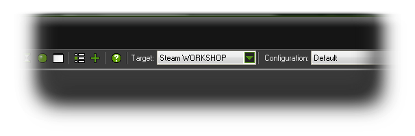
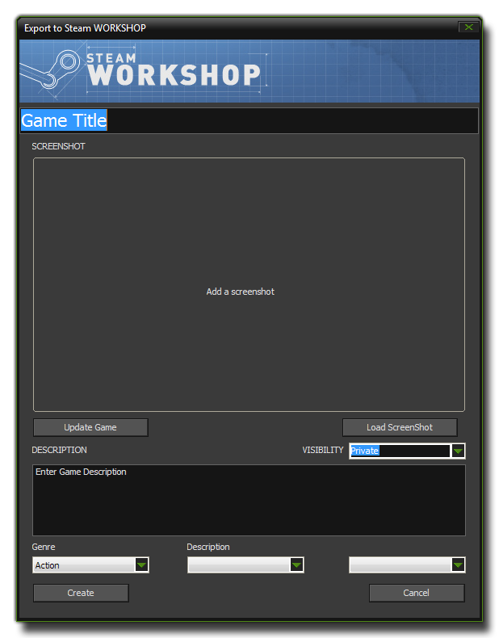
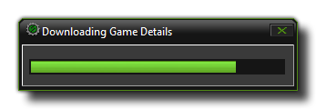

If your copy of GameMaker: Studio has been bought through
Steam, you will see that there is an additional target
module for compiling to apart from the standard Windows and Mac OS
X targets:  When running
your game through GameMaker: Studio normally (or in debug
mode), this target module functions exactly the same as the
standard Windows compiler and will permit you to play and test your
game in the Windows workspace. However, when you decide to compile
you game using the Create Executable command from the file
menu or the icon from the toolbar you will be creating a special
file which will be uploaded directly to the Steam
Workshop.
Steam Workshop is basically a platform for user-generated
content, where you can upload your games and have others play them,
rate them and comment on them. The games you upload can be works in
progress or finished games, but they cannot be for sale as the
nature of the Workshop is to offer user created content for free.
You should also be aware that the games uploaded to the workshop
cannot make use of extensions in any form as Steam consider
them to be a security risk. You can have included files however,
and you need not worry about whether your games will work on Mac OS
X, Ubuntu (Linux) or Windows as that side of things is handled by
Steam.
When you select the Create Executable for Steam Workshop, a new window will open where you must specify certain details that Steam require for you to upload to their site:  At the top of the window, you should add the name of your game (this is what people will see displayed on Steam), then upload a screenshot to show something of your game itself. The screenshot may appear stretched or distorted in this window, but once uploaded it will appear as it should to those that visit the Workshop page for your game. You should then select the visibility of your game which can be either:
- Private - The game will only be visible to you, Steam administrators, and anyone marked as co-creator.
- Friends Only - The game will only be visible in searches to you, your friends, and Steam administrators. However, anyone with a direct link may also view it.
- Public - The game is available to the general public through the Steam Workshop.
After that you can add a description of your game, which can be
as long or short as you wish, and finally, at the bottom, you can
add search tags too. The search tags are limited to a maximum of
three, where the first one must be the "Genre" of the game which
you select from a drop-down menu. The other two tags are used for
giving the description and can be custom tags that you input (click
the box and write the tag) or they can also be selected from a long
list of pre-made descriptive tags accessed through another
drop-down menu.
When you are happy with the information, you can click on the
button labelled Create and your file will be sent to the
Steam server automatically. In a few minutes (depending on your
internet speed) you should be able to access the file on your Steam
account page where you can also modify all the details that you
have included when uploading, including adding more screen shots,
changing the visibility and editing the description (if you have
the Steam client open, you can get to your files through the
Community > Workshop > Your Workshop
Files).
IMPORTANT! the Steam Workshop does not permit any games that make use of extensions, other than pure GML extensions, as they consider them a major security risk. So if your game requires a DLL or DyLib, etc... it will not be uploaded to the Workshop and you will get en error, probably complaining of an "unknown function". This is because the extension has been stripped from the game and so won't compile correctly.
Once you have uploaded a game, to be able to play it you must
first subscribe to it by clicking on the Subscribe button of
the Steam Workshop page for your games, which can be found in the
Community section of the Steam Client, on the right under
the Actions menu. To play other games that are available on
the Workshop from other users you must also subscribe to them, and
all subscribed games will then appear in the Steam Player, which will update as you
subscribe to them to show all the available games.
Once you have uploaded your game to the Workshop, you may need
to update it or wish to change the screenshot chosen for the
description, etc... This can be done easily by loading the game
into GameMaker: Studio and then choosing the Steam
Workshop compile target and hit the Create Executable
just as you would when you originally created the game. This time
however you should press the button marked "Update Game",
which will download all the details of the games you have already
uploaded to the Workshop (this may take a few moments depending on
the number of games that you have there). The following dialogue
will show you the progress:  Once all game details have been downloaded the
previous "Update Game" button will now show a drop-down list
of all of your games. Selecting any one of them will show the
previously uploaded screenshot, description and tags which you can
then change as you wish. Once finished you should then press the
Create button to re-upload the game to the Workshop.